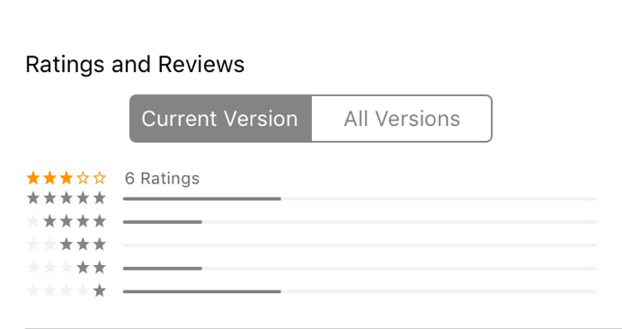
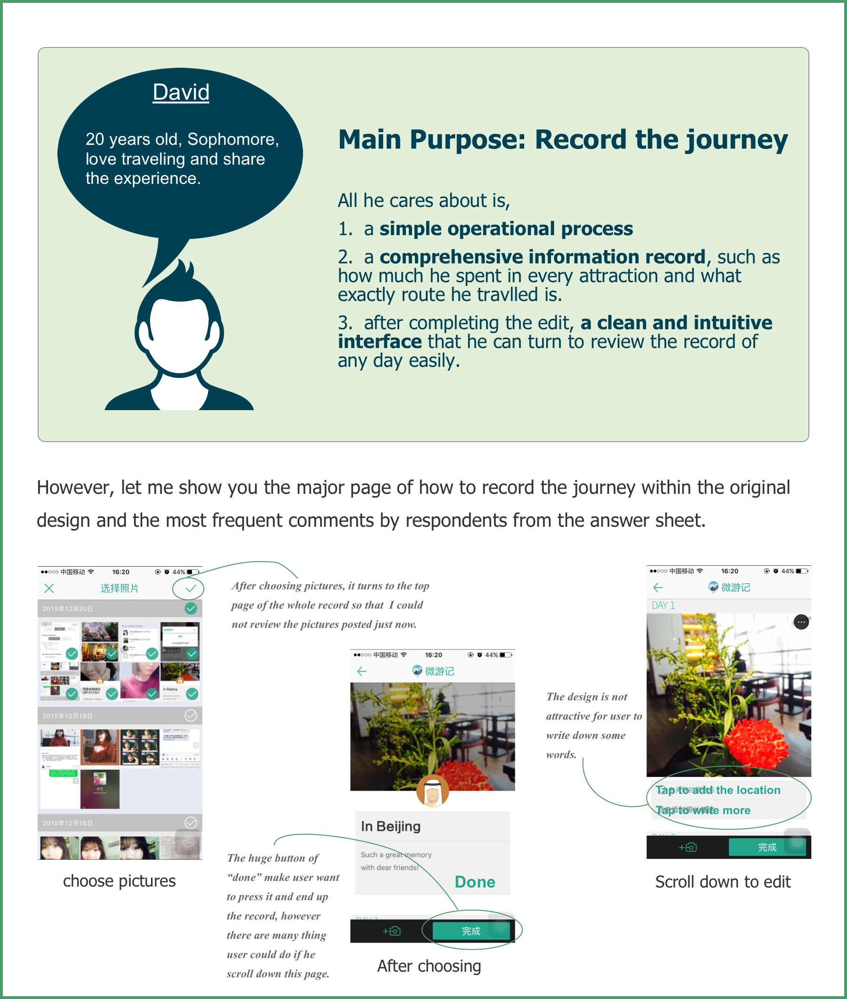
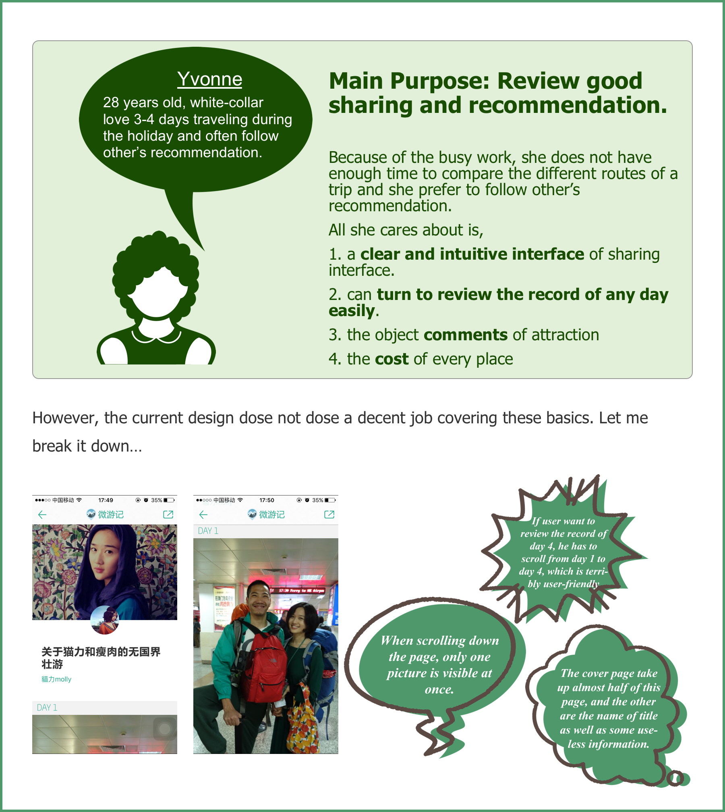

Revamping TravelLog iOS Experience
iOS application redesign | UX
Individual Project
Background of The Subject
TravelLog is an existing app in China. It aims for those who are traveling to record their journey through posting pictures and moods and for those who are planning a travel to browse other’s sharing to make some preparation. What’s more, the log could be synchronized in the Web (qyer.com) to edit again and share to the community.
It should be a perfect application for people to keep the good memories during traveling. However, because of the clunky and illogical design, many people can not complete a log and remove it after using it several times.
As a travel buff, I am pretty sure that a better design could attract much more user to download it and be accustomed to use it.
How to find the problem of the original design
In order to explore the problem of the app, I try to check the comments in app store.
However, the insufficient ratings and a negligible number of reviews can not provide enough materials for my research and also mean that the application does not enjoy popularity among iPhone users.
So I made a questionnaire and publish it on the internet. This was an intense project and everything went by fast, so I got 68 pieces of valid questionnaire within 3 days. (Scan the QR code and review the questionnaire in Chinese.)
Analysis & Persona
By analyzing the data, I found that the major users can be divided into 2 groups and I made two personas to illustrate their characters and needs.
 